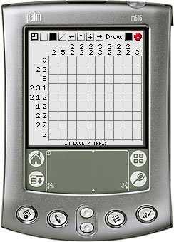

Griddler lets you play Nonograms, Pic-a-pix's, PictureLogics etc. etc. A set of default puzzles are included with Griddler in the PlayTsunami.pdb file.
Griddler is released under the GNU General Public License v2 and requires Palm OS 3.0 or better to work.
You can support this project by donating any amount to my Pay Pal account.
Griddler comes with a couple of puzzles from PlayTsunami.com. Please download some more:
| Puzzle Set | Puzzles # | |
|---|---|---|
| PlayTsunami Set 1 | 50 | |
| PlayTsunami Set 2 | 50 | |
| PlayTsunami Set 3 | 50 | |
| PlayTsunami Set 4 | 50 | |
| PlayTsunami Set 5 | 50 | |
| PlayTsunami Set 6 | 50 | |
| PlayTsunami Set 7 | 50 | |
| PlayTsunami Set 8 | 50 | |
| PlayTsunami Set 9 | 13 |
Also, please visit Rachel Benns wonderful PlayTsunami.com site.
v1.2 (2006-08-08) Fixed a bug where the picture on the Congratulations would be all black. Fixed a memory leak. Fixed the 'Roof Howler' puzzle. Fixed a bug where blank rows or columns were unsolveable. Fixed some graphical bugs on older devices. Added navigation arrows on the game screen. v1.1 (2006-06-08) Added the option to clear the playfield. v1.0 (2006-05-25) First public release.